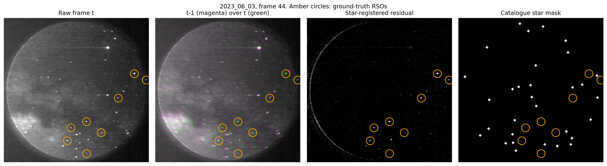
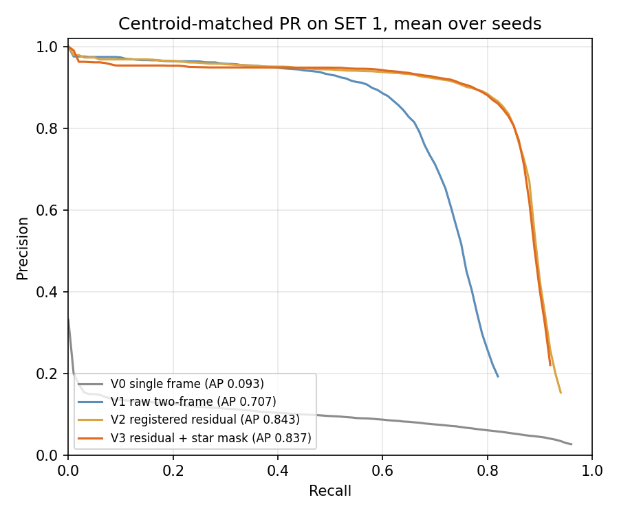
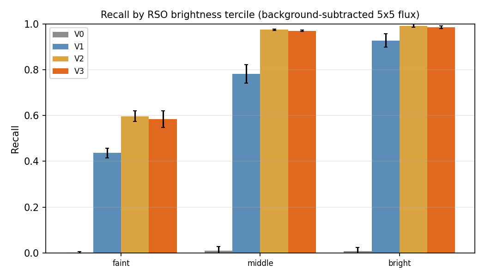
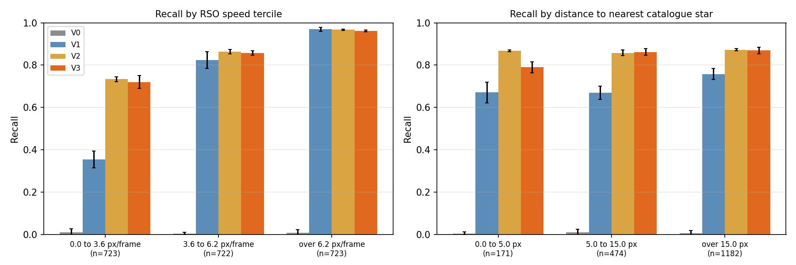
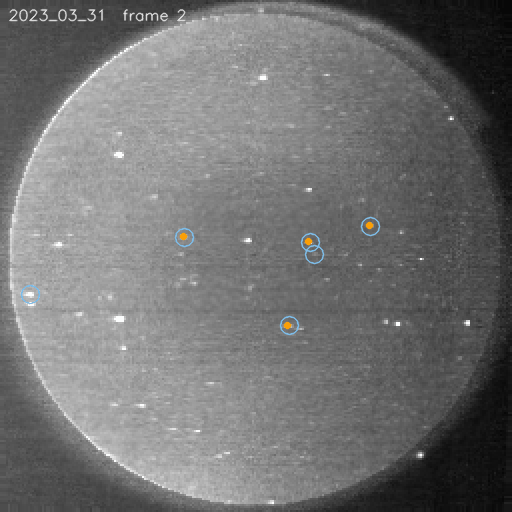
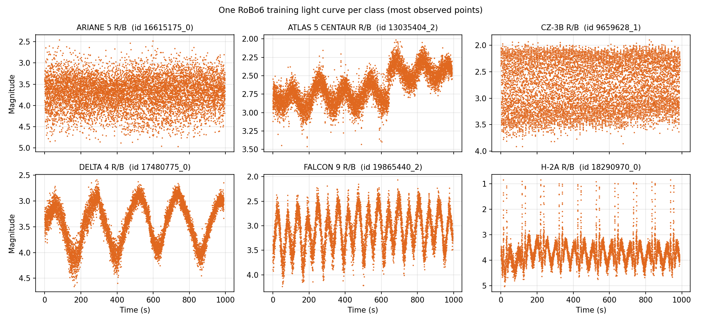
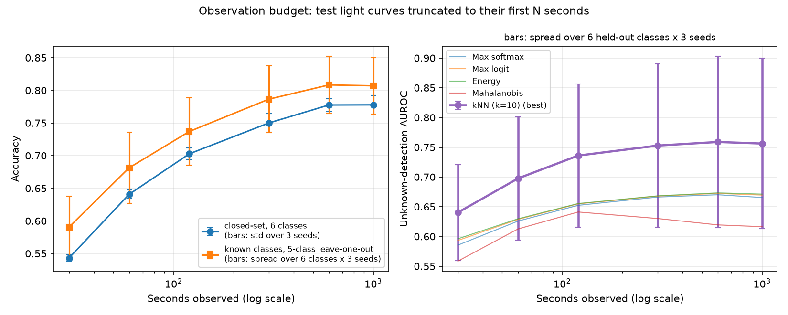
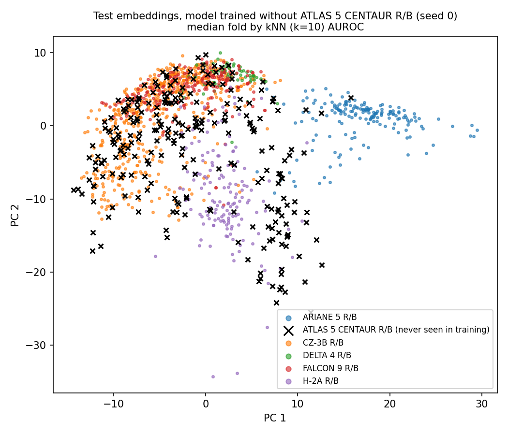
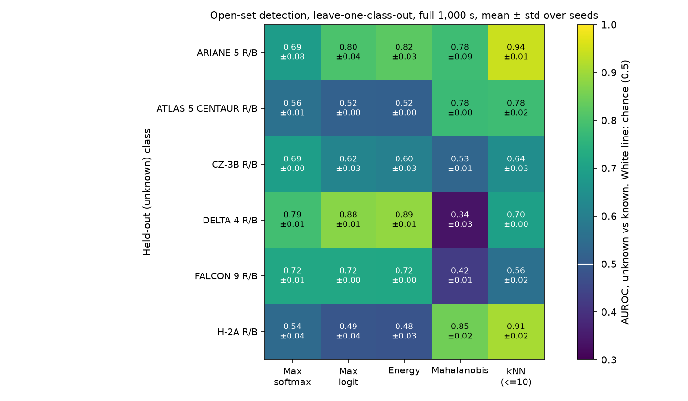

01 · Detection
Star-registered differencing on DUST
The frames come from the Fast Auroral Imager on CASSIOPE. A star and a resident space object are both an unresolved dot. The DUST paper reports that a classifier on a 15 by 15 patch reaches only ROC-AUC 0.72 to 0.75, and that separating them needs motion across frames.
OrbitTrack stacks the previous raw frame with the current one and lets the network learn that motion. FAI is spin-stabilised, so the stars move as well. The star tracker has already plate-solved them. Here, frame t-1 is aligned onto frame t with that solution, the two are subtracted, and a catalogue star mask can be added as a third channel.
The question is how much of the recall gap was the detector having to learn the spacecraft’s own motion. Training follows OrbitTrack’s split: SET 2, with two sessions held out, tested on all of SET 1. Consecutive frames are not split at random. The first frame of every session is dropped. The test set is frames and objects. A detection matches a label when the centres are within px. Headline numbers are the mean ± sample standard deviation over 3 seeds, at confidence .

Same detector, four inputs
- V0 single frame
- V1 raw pair
- V2 registered residual
- V3 residual and star mask
| Input | Precision | Recall | F1 | AP |
|---|
Context rows are copied from other papers. They are not this protocol. mAP50 on the inflated 6 px boxes, which is not the centroid metric:
Each dot is one seed. The tick is the mean. Star matches registered of prepared frames, with a median fit error of px. The rest used the high-pass ECC fallback.
Move the confidence
The table above is the reported point. The slider reads the curves that were stored at every confidence from 0.01 to 0.99, mean ± std over the 3 seeds. The sky frames underneath are seed 0 only, for two sessions.
| Input | Precision | Recall | F1 |
|---|
F1 against confidence. The solid vertical line is the slider. A dotted line stays on the reported confidence once you move away.
Move over the frame. Rings are ground truth. Filled marks matched within the match radius. Open marks did not.
Trails are the published tracker on V3 seed 0 at confidence 0.25. They do not follow the slider. The residual is already aligned to frame t, so the marks stay in the same place.
Where the recall comes from




What this shows
02 · Light curves
Open-set recognition on RoBo6
A classifier trained on six rocket bodies will meet a seventh. Hwang, Suthakar, Qashoa, Lee and Sohn, in Aerospace (2026), review that gap between a fixed label set and what shows up in orbit.
This study trains a 1D ResNet on the released RoBo6 split. The input is a standardised magnitude and a mask of the samples that were actually observed. Training crops a random window. At test the curve is cut to its first N seconds, so later samples cannot leak in. Unknown scores are computed after training: max softmax, max logit, energy, Mahalanobis distance, and a kNN (k = 10) on the embedding.

Closed set, full 1,000 s
| Model | Accuracy | Macro-F1 | Source |
|---|
Seed 0 confusion, rows sum to 1. Hover a cell.
Shorten the observation
Each stop keeps only the first N seconds of every test curve. The reported result is the full series. The bars in the figure are not all the same kind of spread: closed-set bars are the 3 seeds, and the leave-one-out bars mix 6 held-out classes with 3 seeds.

Which unknown score, on which class
Each cell is one class held out of training. The number is AUROC for telling that class from the classes the model did see. 0.50 is chance. Click a cell. The histogram is seed 0 only. Mean AUROC over the six classes, at 1,000 s: . Best average score: .
Known objects in grey, the held-out class in amber. Densities from seed 0, on one vertical scale.


What this shows
03 · Notes
Method
- Stars are matched across frames on catalogue right ascension and declination. The per-frame index id is not stable, so it is not used.
- When fewer than four stars agree, alignment falls back to ECC on a high-pass image. Identity is the last resort.
- Detection is scored by centroid distance, 3 px, greedy in confidence order. Box mAP50 is reported only as a secondary number, on boxes inflated to 6 px.
- Brightness is the 5 by 5 sum minus the local 15 by 15 median. Peak DN is saturated for most objects, so it is not the binning measure.
- The tracker is constant velocity. The gate is 6 px, or 15 px on a track’s first link. A track dies after 2 missed frames and is kept if it has at least 3 points. MOTA and IDF1 use motmetrics at 3 px, on V3 seed 0.
- The detector is YOLO11n, ultralytics 8.4.208, with the default colour augmentations turned off. Channels are not colours.
- The light-curve network pools only the timesteps that were observed.
- Training ran on a Colab T4. Every run takes a seed. The published Project A numbers are the first completed training of all 12 runs.
Not done here
- An event-camera spiking detector (EBSSA). Future work.
- Sim-to-real pretraining with SatSim. Future work.
- Onboard INT8 deployment. Future work.
- A single unknown score that uses both the classifier output and the embedding. The heatmap says the two families fail on different classes, so this is the obvious next measurement.